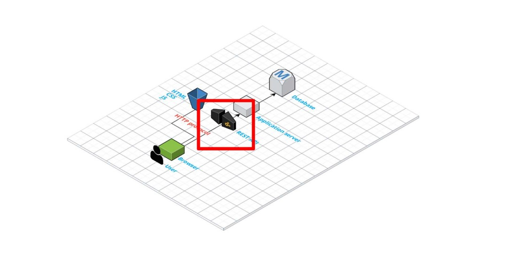
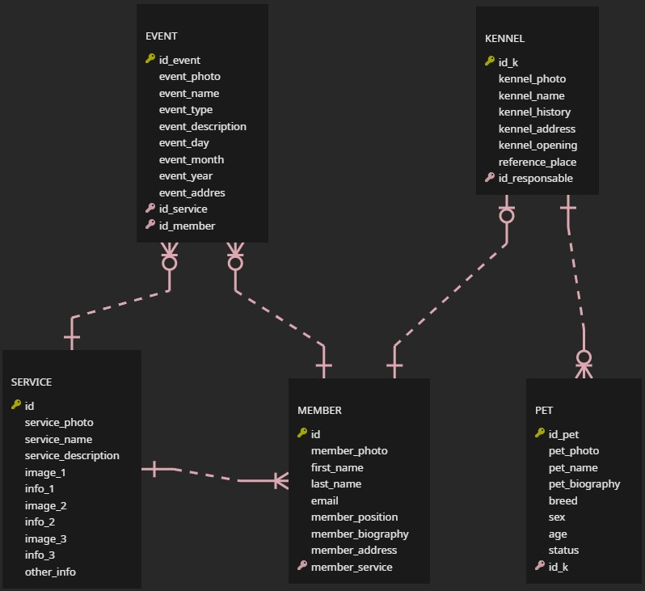
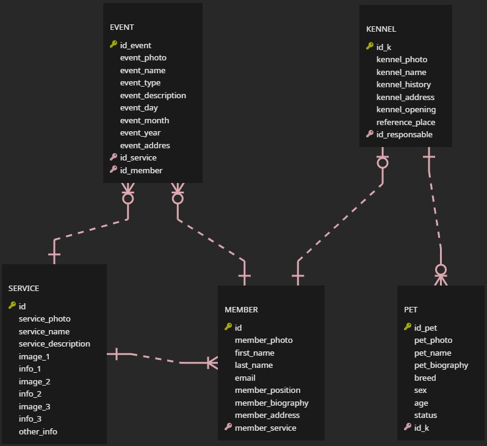

# Documentation of the Backend part
> Deliverable D1
## General group information
| Member n. | Role | First name | Last Name | Matricola | Email address |
|----------------------------------------------------------------------------------------------------
| 1 | administrator | Luca | Barsottini |10437877 |luca.barsottini@mail.polimi.it|
| 2 | member | Erbol | Kasenov |10674231 |erbol.kasenov@mail.polimi.it |
| 3 | member | Lucia | Gualdi |10545789 |lucia.gualdi@mail.polimi.it |
## Links to other deliverables
- Deliverable D0: the web application is accessible at [this address].
- Deliverable D2: the YAML or JSON file containing the specification of the app API can be found at [this address].
- Deliverable D3: the SwaggerUI page of the same API is available at [this address].
- Deliverable D4: the source code of D0 is available as a zip file at [this address].
- Deliverable D5: the address of the online source control repository is available at [this address].
We hereby declare that this is a private repository, and, upon request, we will give access to the instructors.
If there is an errore 404 it's because invitation did not work.
## Specification
### Web Architecture
Through passing static page from the server to the browser we have ensured them to be rendered by the same browser.
Our application is composed of a database (Postgres),
a server (in Node.js) and a folder containing the static page.
The perfect representation is the one showed during lessons:

The database is the Data-layer, while the application server is the Application-layer. The database (Postgres) is managed in Heroku,
while the application server has been generated from Swagger and then finished by us.
We find a perfect representation online where are shown both the level and the connection:
 ### API
#### REST compliance
We followed as much as possible the REST paradigm:
- Client-Server: the client application and server application can evolve separately,
and we tried to remove any dependencies.
- Layered System: the system is layered, the Postgres server is situated in another place compared to the server.
Session information is stored on the server.
- Code on demand: this part was not so relevant for us because we sent just resources in JSON format.
- Stateless: we achieved this point. We have just GET to the server and we did not need to manage any user login.
- Uniform Interface: it was one of the most important parts, therefore we try to follow it as much as possible.
Our interface is resource-based, we have resources with relative URIs, we have resource representation with naming
convention and the format for the GET attribute are all in JSON, the messages are self-descriptive.
#### OpenAPI Resource models
We kept everything simple, in order to have a more understandable model:
most part of the resources are describe with value string.
Photo and dates are saved trough strings.
All the table in the database store an unique identifier.
### Data model
Here is the ERD diagram:

## Implementation
### Tools used
To develop the back-end application, we used:
- Nodejs, Connect, Swagger, Knex, Serve-static, Pg, Heroku
- PostgreSQL to manage the database (Postgres)
- Swagger (OpenAPI) to generate and manage the server and the specification
### Discussion
-How did you make sure your web application adheres to the provided OpenAPI specification?-
For what concerns our project, we started from the OpenAPI specifications to build it.
During the development, we continuously manipulated OpenAPI specifications to keep them updated with the sate of the project.
All API operations are used on the front-end side.
-Why do you think your web application adheres to common practices to
partition a REST-based web application (static assets vs.application data)?-
We separated the static resources, like Html, CSS, and Js, putting them on the server-side.
Our data is stored in a separate space and used with a specific call.
We found some equilibrium between static and non-static and we found that our solution was best suited for our website.
-Describe synthetically why and how did you manage session state, what are the state change triggering
actions (e.g., POST to login etc..).-
We do not have a lot of state changes because we have no POST or login part, so our website is composed mainly of GET.
-Which technology did you use (relational or a no-SQL database) for managing the data model?-
We used PostgresSQL because, from what we have seen and in our opinion, it was the best way to manage the data model.
## Other information
### Task assignment
-Erbol work on front end (90%)
-Lucia work on front end (90%)
-Luca work on back end (90%)
Step by step, the implementation of each part has been explained and shared among group members, to understand and possibly interchange tasks, and to complete the project respecting deadlines.
In this way, we were able to intervene and help each other for the parts requiring a slower implementation.
### Analysis of existing API
We understood REST paradigm from the course lesson and from https://restfulapi.net .
We started by doing the free courses organized by https://www.codecademy.com where we learned
how to use Html/ Css/ Js supported by the professor lesson, obviously with the support of https://www.html.it.
In order to understand API, we took all the information from https://www.youtube.com/watch and from the professor lesson.
Then we went to https://www.freecodecamp.org/learn
where step by step it was explained what an API is and how to implement one, there were also some explanation
on how to do the back-end part and the front end of a website.
The main learning about using Swagger came from the example Pet of the editor swagger and the documentation inside.
In order to understand how to use and what is Node js we did https://www.youtube.com/watch
where again it was explained step by step the fundamental passage to create a small app, unfortunately using Express.
Because of this, our learning had to go back to the module connect, which was difficult to understand due to the lack of websites and sources that explain it.
Therefore, at first, we found some videos to give us some ideas, but then the main research was done in https://nodejs.org/it/.
For creating a database, we followed a full tutorial from https://www.youtube.com/watch.
This video was the base for all our creation of the database and helped us to understand clearly the join between table used to pass the information in Json.
This information has also been used in the implementation of the back end.
Needless to say, to solve most of our problem we constantly used https://stackoverflow.com and https://github.com.
All of the previous link were used as support to the lesson because all of the tree component of the group had not a solid base with the database, server, REST, api.
### Learning outcome
In conclusion, all the members learned a lot about a new challenging field from the simplicity of creating HTML page to set up a server with the connection
and the creation to the database.
In fact, in our past experiences, none of us did something related to the topics discussed for this exam.
Erbol Kasenov did Cyber Security study, and with Luca Barsottini had some small experiences in Html because of the exam:
Computer Graphics, that explains the effect that can be applied to some created figure in Html, but not how to create an Html page.
On the other hand, Lucia Gualdi studied service design, with little experience in the usability aspect of websites.
### API
#### REST compliance
We followed as much as possible the REST paradigm:
- Client-Server: the client application and server application can evolve separately,
and we tried to remove any dependencies.
- Layered System: the system is layered, the Postgres server is situated in another place compared to the server.
Session information is stored on the server.
- Code on demand: this part was not so relevant for us because we sent just resources in JSON format.
- Stateless: we achieved this point. We have just GET to the server and we did not need to manage any user login.
- Uniform Interface: it was one of the most important parts, therefore we try to follow it as much as possible.
Our interface is resource-based, we have resources with relative URIs, we have resource representation with naming
convention and the format for the GET attribute are all in JSON, the messages are self-descriptive.
#### OpenAPI Resource models
We kept everything simple, in order to have a more understandable model:
most part of the resources are describe with value string.
Photo and dates are saved trough strings.
All the table in the database store an unique identifier.
### Data model
Here is the ERD diagram:

## Implementation
### Tools used
To develop the back-end application, we used:
- Nodejs, Connect, Swagger, Knex, Serve-static, Pg, Heroku
- PostgreSQL to manage the database (Postgres)
- Swagger (OpenAPI) to generate and manage the server and the specification
### Discussion
-How did you make sure your web application adheres to the provided OpenAPI specification?-
For what concerns our project, we started from the OpenAPI specifications to build it.
During the development, we continuously manipulated OpenAPI specifications to keep them updated with the sate of the project.
All API operations are used on the front-end side.
-Why do you think your web application adheres to common practices to
partition a REST-based web application (static assets vs.application data)?-
We separated the static resources, like Html, CSS, and Js, putting them on the server-side.
Our data is stored in a separate space and used with a specific call.
We found some equilibrium between static and non-static and we found that our solution was best suited for our website.
-Describe synthetically why and how did you manage session state, what are the state change triggering
actions (e.g., POST to login etc..).-
We do not have a lot of state changes because we have no POST or login part, so our website is composed mainly of GET.
-Which technology did you use (relational or a no-SQL database) for managing the data model?-
We used PostgresSQL because, from what we have seen and in our opinion, it was the best way to manage the data model.
## Other information
### Task assignment
-Erbol work on front end (90%)
-Lucia work on front end (90%)
-Luca work on back end (90%)
Step by step, the implementation of each part has been explained and shared among group members, to understand and possibly interchange tasks, and to complete the project respecting deadlines.
In this way, we were able to intervene and help each other for the parts requiring a slower implementation.
### Analysis of existing API
We understood REST paradigm from the course lesson and from https://restfulapi.net .
We started by doing the free courses organized by https://www.codecademy.com where we learned
how to use Html/ Css/ Js supported by the professor lesson, obviously with the support of https://www.html.it.
In order to understand API, we took all the information from https://www.youtube.com/watch and from the professor lesson.
Then we went to https://www.freecodecamp.org/learn
where step by step it was explained what an API is and how to implement one, there were also some explanation
on how to do the back-end part and the front end of a website.
The main learning about using Swagger came from the example Pet of the editor swagger and the documentation inside.
In order to understand how to use and what is Node js we did https://www.youtube.com/watch
where again it was explained step by step the fundamental passage to create a small app, unfortunately using Express.
Because of this, our learning had to go back to the module connect, which was difficult to understand due to the lack of websites and sources that explain it.
Therefore, at first, we found some videos to give us some ideas, but then the main research was done in https://nodejs.org/it/.
For creating a database, we followed a full tutorial from https://www.youtube.com/watch.
This video was the base for all our creation of the database and helped us to understand clearly the join between table used to pass the information in Json.
This information has also been used in the implementation of the back end.
Needless to say, to solve most of our problem we constantly used https://stackoverflow.com and https://github.com.
All of the previous link were used as support to the lesson because all of the tree component of the group had not a solid base with the database, server, REST, api.
### Learning outcome
In conclusion, all the members learned a lot about a new challenging field from the simplicity of creating HTML page to set up a server with the connection
and the creation to the database.
In fact, in our past experiences, none of us did something related to the topics discussed for this exam.
Erbol Kasenov did Cyber Security study, and with Luca Barsottini had some small experiences in Html because of the exam:
Computer Graphics, that explains the effect that can be applied to some created figure in Html, but not how to create an Html page.
On the other hand, Lucia Gualdi studied service design, with little experience in the usability aspect of websites.